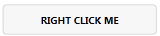
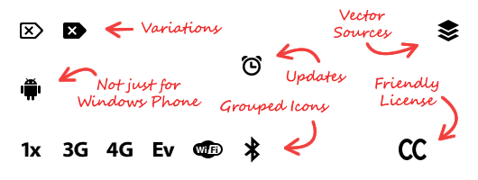

MahApps.Metro Documentation
Last updated for stable release 0.6
This documentation is under construction
Table of Contents
Foreword
Metro isn’t for everything
Microsoft have demonstrated both sides of metro - it can look absolutely stunning if it is done well, or absolutely woeful if done poorly. Not every application translates well into a metro interface. If you’re designing a complex tool such as Visual Studio, it’s probably best to avoid a heavy-typography based UI style.
Of course, there will always be exceptions to the rule, but just because metro looks simplistic does not mean the design isn’t complex. The more complex an application, the more time (generally) you’ll need to spend on the design.
No UI kit does design for you
While MahApps.Metro strives to make good looking metro interfaces easier, but just like with Windows Form or “default” WPF, a designer (or at least thinking about design) is needed to create a good interface. This is a combination of aesthetic and usability.
Fonts
Segoe UI, Segoe WP and Zegoe UI are all Microsoft/Ascender fonts. They cannot be embedded in MahApps.Metro due to legal reasons.
Credit
Examples
- Windows Phone Power Tools
- Silverlight Spy (“vNext”)
- Kompressah
- MahTweets (v4/dev branch)
- MahChats
- MarkPad
- Carnac
(Contact me if you want to be added to this list!)
Getting Started
Installing MahApps.Metro
You can install MahApps.Metro via Nuget using the GUI (right click on your project, Manage Nuget References, search for ‘MahApps.Metro’) or via the console PM> MahApps.Metro
If you wish to use the alpha/nightly releases of MahApps.Metro, you need to use the console
TODOThis documentation assumes the latest stable release (at the time of writing, 0.6)
Styling a Window
There are two main approaches you can take with MahApps.Metro to style a Window, using the MetroWindow control and rolling your own. For the getting started guide, we’ll cover and assume MetroWindow as this approach will work for a good percentage of apps, and is the quickest and easiest way to get going. If you wish to learn more about rolling your own, it’s covered in the “Advanced” section of Getting Started.
A default WPF Window with a few controls looks like so

After installing MahApps.Metro into your project,
- open up MainWindow.xaml,
- add a namespace reference in the opening Window tag by adding
xmlns:Controls="clr-namespace:MahApps.Metro.Controls;assembly=MahApps.Metro" - and change
<Window ...to<Controls:MetroWindow ...(and change the closing tag too!)
You’ll need to change the codebehind frompublic partial class MainWindow : Window topublic partial class MainWindow : MetroWindow
That being said - usually you can just drop the inheritance on a partial declaration. This basic MetroWindow will result in…

A complete and utter mess! Oh no! What has gone wrong? Nothing, we just haven’t added the resources and styles yet. Unfortunately you need to include these resources in each Window. We have tried embedding this in MetroWindow, but then you lose all ability to dynamically change the theme.
Just under the opening MetroWindow tag, add the following
<Window.Resources>
<ResourceDictionary>
<ResourceDictionary.MergedDictionaries>
<ResourceDictionary Source="pack://application:,,,/MahApps.Metro;component/Styles/Colours.xaml" />
<ResourceDictionary Source="pack://application:,,,/MahApps.Metro;component/Styles/Fonts.xaml" />
<ResourceDictionary Source="pack://application:,,,/MahApps.Metro;component/Styles/Controls.xaml" />
<ResourceDictionary Source="pack://application:,,,/MahApps.Metro;component/Styles/Controls.AnimatedSingleRowTabControl.xaml" />
<ResourceDictionary Source="pack://application:,,,/MahApps.Metro;component/Icons/MergedResources.xaml" />
<ResourceDictionary Source="pack://application:,,,/MahApps.Metro;component/Styles/Accents/Blue.xaml" />
<ResourceDictionary Source="pack://application:,,,/MahApps.Metro;component/Styles/Accents/BaseLight.xaml" />
</ResourceDictionary.MergedDictionaries>
</ResourceDictionary>
</Window.Resources>
And now we have a semi-decent looking window!
Explaining the elements

If you don’t like the elements that are labelled, fear not, they’re all optional.
- The titlebar is what sets
MetroWindowapart from rolling your own.ShowTitleBar="true|false" - Instead of using static images, this uses a font called Marlett.
- The resize grip is the only way to resize a
MetroWindow, other than in code or with the min/max buttons. For dialogs where you may not want the user resizing the window, ShowIconOnTitleBar="true|false"
Customisation
WindowCommandsWindowCommands are the minimise, maximise/restore, and close buttons. As over MahApps.Metro 0.7, these can be extended to include your own buttons too.
<Controls:MetroWindow.WindowCommands>
<Controls:WindowCommands>
<Button Content="settings" />
<Button >
<StackPanel Orientation="Horizontal">
<Rectangle Width="20" Height="20">
<Rectangle.Resources>
<SolidColorBrush x:Key="BlackBrush" Color="White" />
</Rectangle.Resources>
<Rectangle.Fill>
<VisualBrush Stretch="Fill" Visual="{StaticResource appbar_cupcake}" />
</Rectangle.Fill>
</Rectangle>
<TextBlock Text=" deploy cupcakes" />
</StackPanel>
</Button>
</Controls:WindowCommands>
</Controls:MetroWindow.WindowCommands>Will produce 
WindowCommands foreground (link) colour will always be white unless you disable the titlebar, then it’ll be the reverse of whatever theme you’ve selected. ie, for White/Light theme, the buttons will be black.
Advanced
Roll your own Window
The roll your own approach is still very relevant depending on what style of app you’re going for. For MarkPad, we needed the flexibility of rolling our own.
The key elements we used were the WindowsCommand, and BorderlessWindowBehavior.
BorderlessWindowBehavior
Add a reference (in the opening Window tag) to xmlns:i="http://schemas.microsoft.com/expression/2010/interactivity" and to xmlns:Behaviours="clr-namespace:MahApps.Metro.Behaviours;assembly=MahApps.Metro"
Then somewhere within the Window tags, add
<i:Interaction.Behaviors>
<Behaviours:BorderlessWindowBehavior/>
</i:Interaction.Behaviors>And you’re done! BorderlessWindowBehavior has a few options, such as ResizeWithGrip and AutoSizeToContent.
<Behaviours:BorderlessWindowBehavior ResizeWithGrip="False" /> Controls
Most of the controls are demonstrated in the sample application which you can pull down from source.
There are three categories of controls in MahApps.Metro
- Implicit template/styles that replace the look of existing controls (such as
Textbox,Button, orScrollbar) - Explicit template/styles that require you to set the style of a control (such as
ChromelessButtonStyle) - New controls (such as
ToggleSwitchorMetroWindow)
Buttons
Standard Button
This just replaces the standard button when you drop in the library, nothing fancy to activate it

MetroCircleButton
“Standard” circle button, designed for icons.
Add the following to a button to apply this style: Style="{DynamicResource MetroCircleButtonStyle}"
AppBarButton
Inspired by Windows Phone 7’s app bar buttons which are a circle button with text underneath.
Use the AppBarButton control to use this type of button.
<Controls:AppBarButton
VerticalAlignment="Top"
MetroImageSource="{StaticResource appbar_barcode}"
Foreground="{DynamicResource BlackBrush}"
Content="scan" /> Square button
Another WP7 styled button, this time just for text. Like all the buttons here, has normal, clicked, and hover states.
Add the following to a button to apply this style: Style="{DynamicResource SquareButtonStyle}"
FlatButton
This sort of button can be found when you’re making a call on Windows Phone - all of the controls (hang up, keypad, etc) are ‘flat buttons’.
Flat button lives in <ResourceDictionary Source="pack://application:,,,/MahApps.Metro;component/Styles/FlatButton.xaml" />
You’ll need to import that as well to use it.
Known issues
No automatic binding on WindowCommands with Caliburn.Micro
Caliburn.Micro automatically binds on the visual tree and a couple of other locations, which doesn’t cover how MahApps.Metro’s awesome WindowCommands are implemented. To work around this issue for a simple button to action binding, first add the cal namespace to the root element (usually Controls:MetroWindow):
xmlns:cal="http://www.caliburnproject.org"Then explicity attach the button to the action:
<Controls:MetroWindow.WindowCommands>
<Controls:WindowCommands>
<Button x:name="SayWat" Content="wat" cal:Message.Attach="SayWat"/>
</Controls:WindowCommands">
</Controls:MetroWindow.WindowCommands>Resources
Icons
Starting with MahApps.Metro 0.7, there will no longer be any embedded icons. These have all been moved to a separate nuget package that installs the fonts/XAML resources as loose files. This allows better discoverability and customisation.
You can install this package using nuget:
PM> Install MahApps.Metro.Resources
Currently, this consists of Entypo and Temparian’s Windows Phone Icon pack

More information about MahApps.Metro.Resources
metro.css
This document uses the metro.css, a code52 project.